Cross-Validation Results: Automatic Report and Interpretation
Metrics by Fold
| Fold |
R2 |
MSE |
RMSE |
MAE |
| 1 |
-0.483353 |
455.782886 |
21.349072 |
19.482857 |
| 2 |
-0.736820 |
201.278183 |
14.187254 |
10.738333 |
| 3 |
-15.817823 |
368.123450 |
19.186543 |
18.075000 |
| 4 |
-0.493936 |
264.302100 |
16.257371 |
14.370000 |
| 5 |
-0.292942 |
392.802917 |
19.819256 |
19.035000 |
Feature Importance (mean ± std)
| feature |
mean_importance |
std_importance |
| TL |
0.156413 |
0.062499 |
| FL |
0.145636 |
0.061499 |
| PR |
0.138893 |
0.064921 |
| TR |
0.122589 |
0.011428 |
| OL |
0.099688 |
0.047129 |
| OR |
0.083567 |
0.025648 |
| CL |
0.079762 |
0.031030 |
| PL |
0.061606 |
0.030737 |
| FR |
0.056086 |
0.027904 |
| CR |
0.055758 |
0.030628 |
Main Plots
feature_importances_mean_std.png
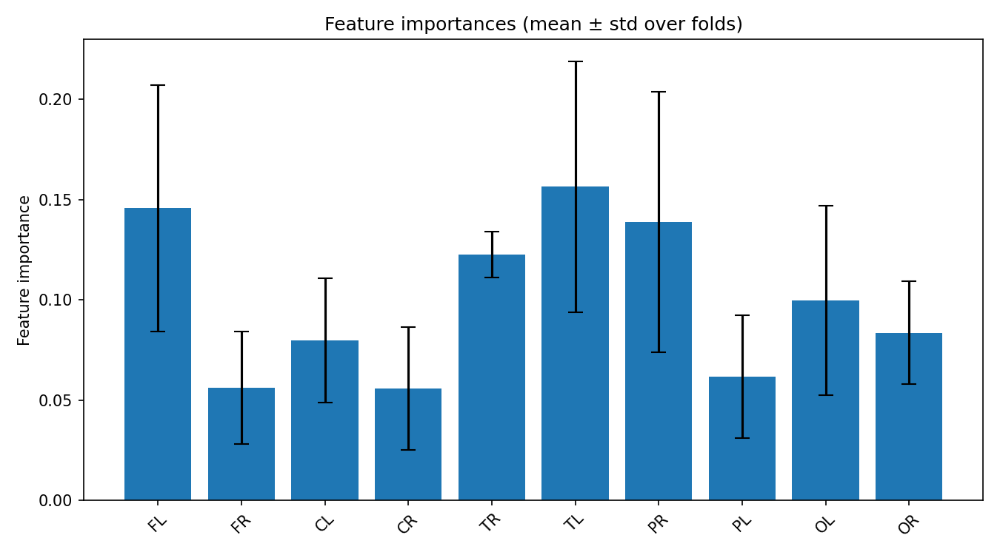
feature_importances_correlation_heatmap.png
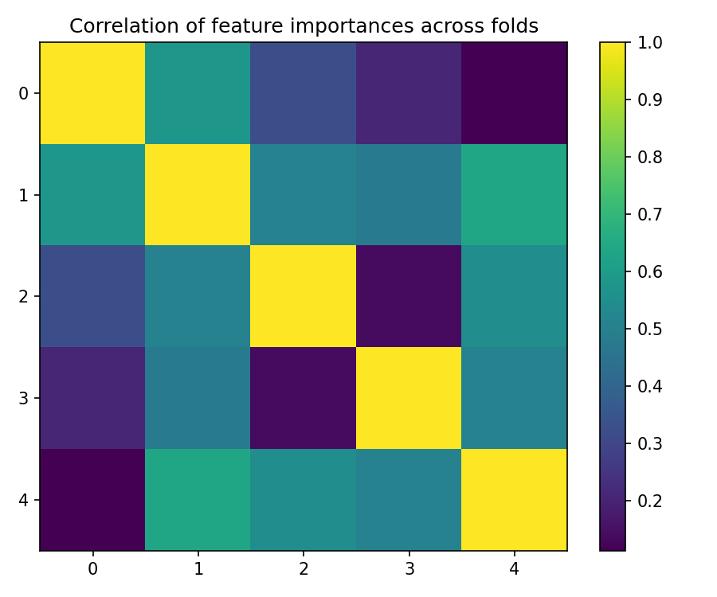
best_fold_5_feature_importances.png
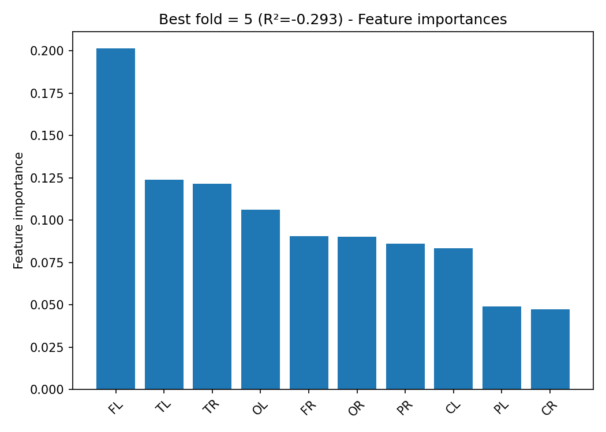
True vs Predicted Scatter Plots (by fold)
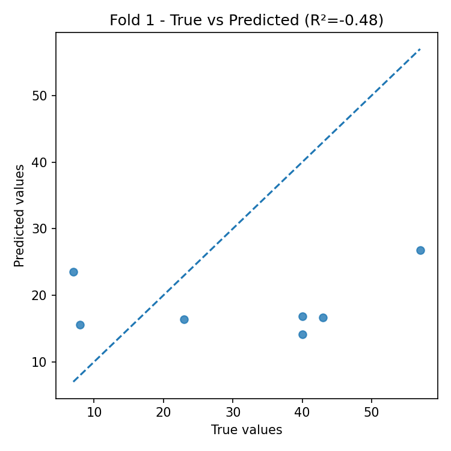
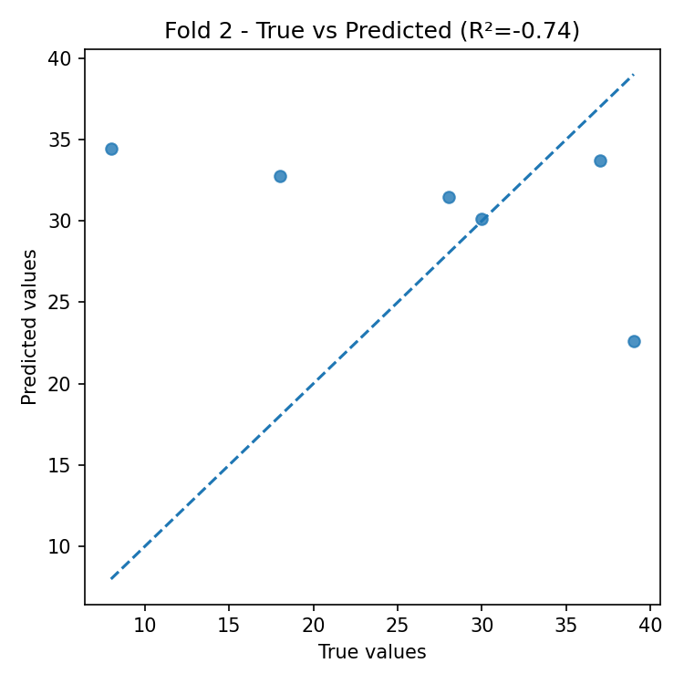
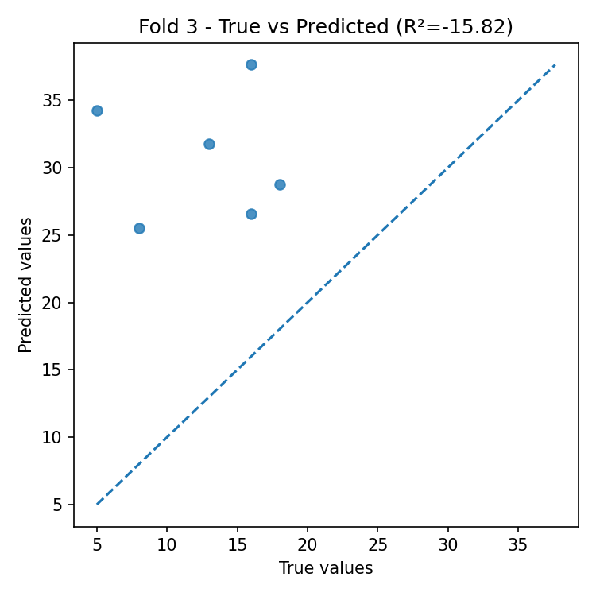
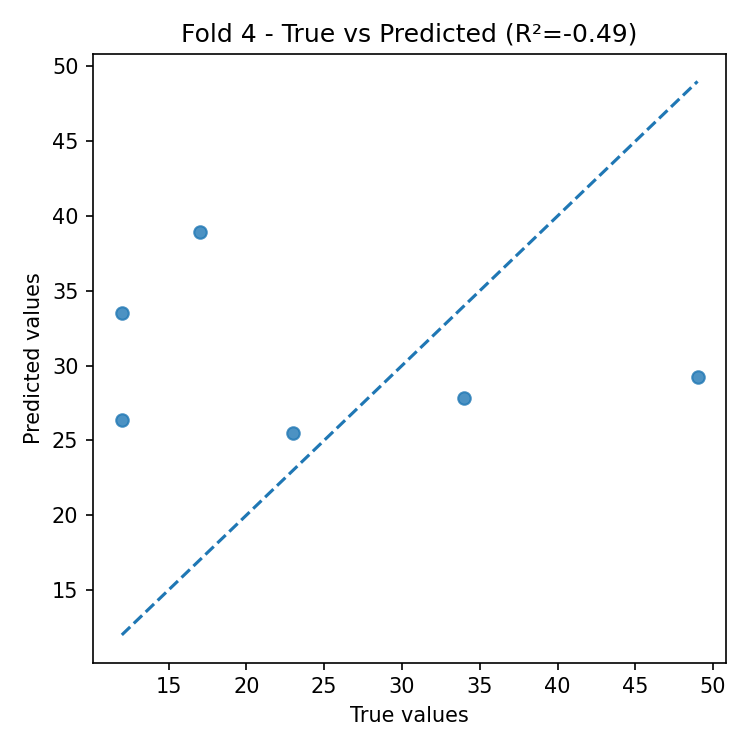
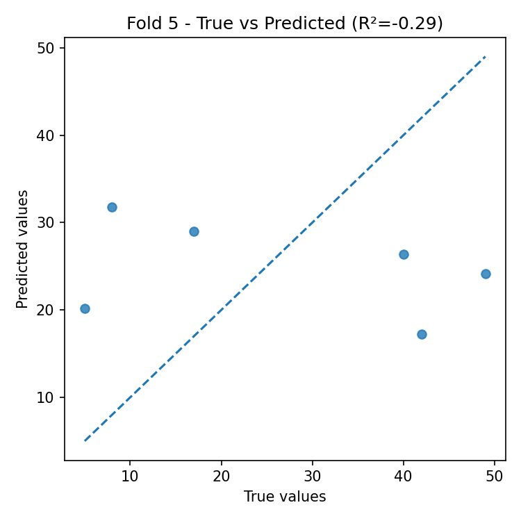
Residual Plots (by fold)
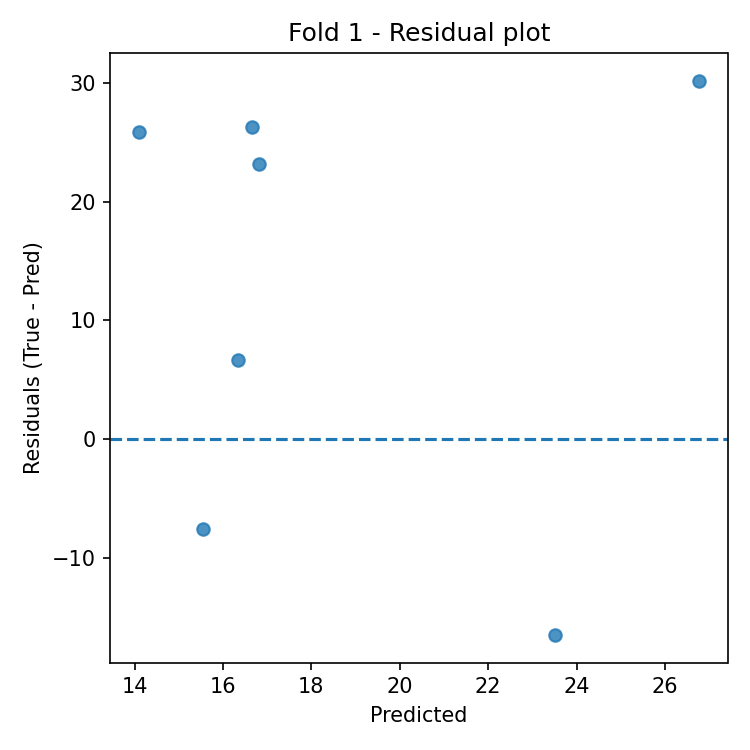
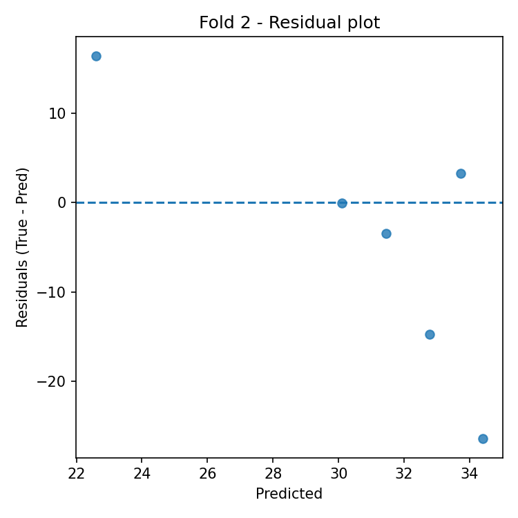
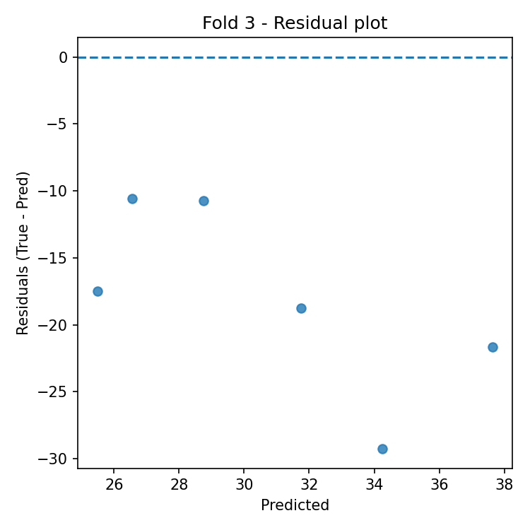
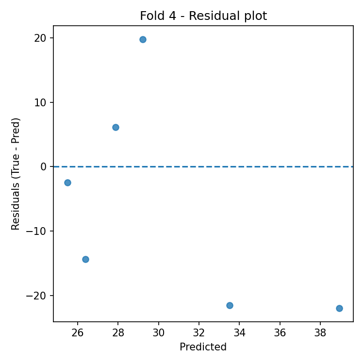
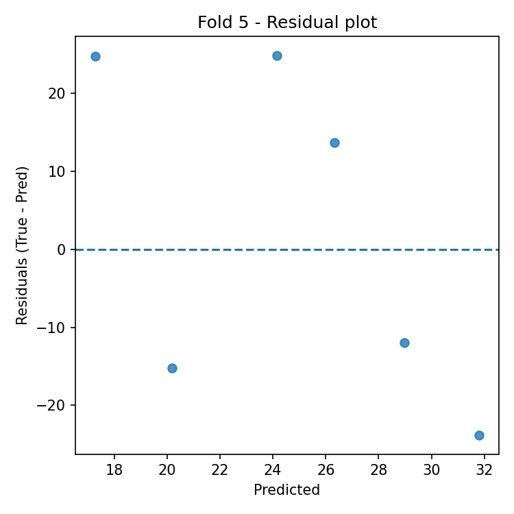
Automatic Interpretation
Overall Performance
- Mean R² across folds: -3.565 (± 6.851).
- Average error: RMSE = 18.160, MAE = 16.340 (same unit as target variable).
Model Stability
- R² variability across folds is high (std = 6.851).
- Average feature importance stability across folds: 0.039 (lower = more stable).
Most Important Features (average across all folds)
- Top-3: TL (0.156), FL (0.146), PR (0.139).
Best Fold
- Best fold: 5 with R² = -0.293.
- In the best fold, the most important features are: FL (0.201), TL (0.124), TR (0.121).
Residual Analysis (best fold)
- Residuals–predictions correlation: -0.560 (0 ≈ absence of linear bias).
- |Residuals|–predictions correlation: -0.202 (positive values indicate possible heteroscedasticity).
- Outliers (|res| > 3·std): 0.